U loopt er elke dag overheen, maar de grond onder uw voeten heeft een lang geheugen. Honderd jaar geleden was dit de rafelrand van het dorp: open heide, fabrieksrook en een stoomtram die rammelend naar Laren reed. De kerk, de woningen, de straatnamen: ze zijn er niet zomaar. Dit is hoe die rand veranderde, en wat uw plein daarvan heeft meegekregen.
Stuifzand
Heide, schapen en zand
Ga terug naar 1880 en hier was vrijwel niets. De oostkant van Hilversum, in de volksmond over 't spoor, was het laagste en armste deel van het dorp: open heide en stuifzand, gemene grond van de Erfgooiers waar eeuwenlang schapen liepen. De Erfgooiers waren de boeren met een eeuwenoud, erfelijk recht om hun vee te weiden op de gezamenlijke gronden van het Gooi. Het Gooi leefde van schraal zand en schapenhouderij. Dat dit lege stuk binnen vijftig jaar zou vollopen met fabrieken, een tram en honderden woningen, had toen niemand durven voorspellen. Op de luchtfoto bovenaan, uit 1931, ziet u dat kantelmoment: de buurt is er al, maar de heide begint nog meteen achter de laatste daken.
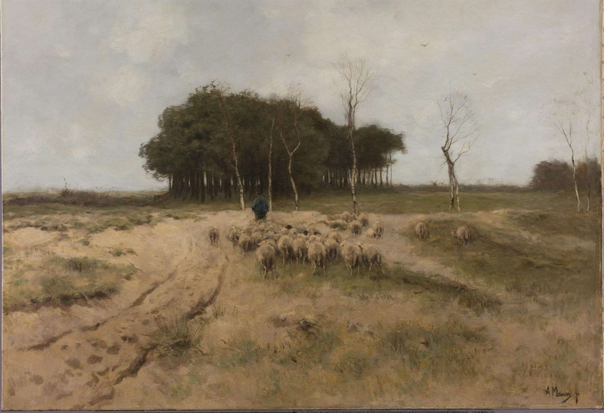
Het spoor
Eén rails verandert alles
De verandering begon met een spoorlijn. In 1874 kreeg Hilversum de Oosterspoorweg, en ineens lag Amsterdam binnen handbereik. Het dorp groeide explosief. Maar het gemeentebestuur wilde geen vuile industrie en geen stoom in het nette centrum, dus alles wat rook en lawaai maakte werd naar de overkant van het spoor geduwd. Zo ontstond hier, op het goedkope zand, de werkende, rokende oostkant van de stad.
Weetje · de buurt loopt vol
In 1874 woonden er maar tweehonderd mensen aan de overkant van het spoor, op een dorp van zo'n 7.500 inwoners. Tegen de jaren vijftig was de wijk Over 't Spoor goed voor ongeveer een derde van de stad. Hilversum zelf groeide door tot ruim 100.000 inwoners eind jaren vijftig, en telt er nu ongeveer 96.000.
In 1874 was het spoor in Nederland nog jong: de allereerste lijn, tussen Amsterdam en Haarlem, was pas vijfendertig jaar oud, en treinreizen was voor de meeste mensen nog een nieuwigheid. Het Gooi gold tot dan toe als een arme, afgelegen streek van schaapherders en boekweittelers. Dat juist Hilversum een station kreeg, was geen erkenning van het dorp zelf: de Hollandsche IJzeren Spoorweg-Maatschappij legde de Oosterspoorweg aan als doorgaande route van Amsterdam naar Amersfoort en Zutphen, én om — buiten haar grote concurrent om — een eigen verbinding met Utrecht te krijgen. Hilversum lag simpelweg op die strategische lijn. Het dorp werd niet belangrijk gevónden; het werd belangrijk gemáákt door het spoor.
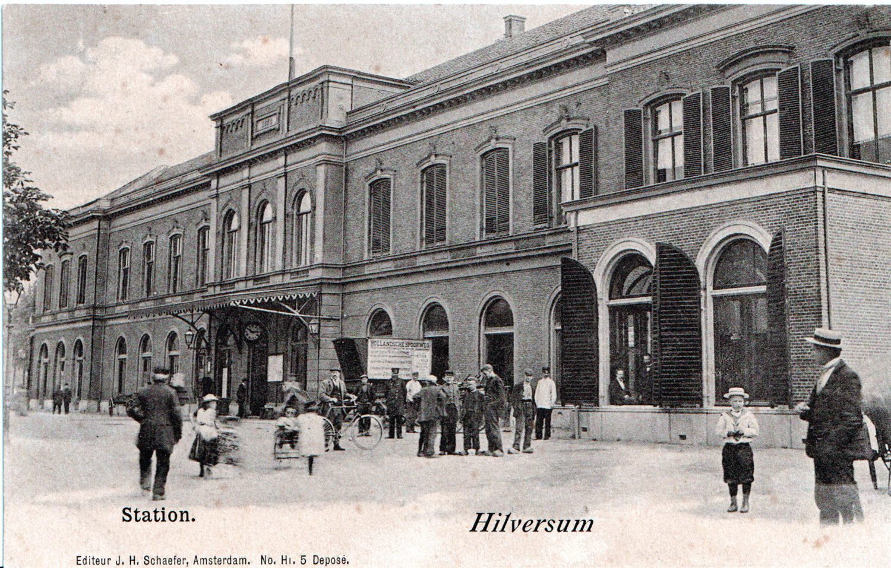
Het plein
Een kerk, een groen en negentien huizen
Het Cuypersplein is geen toevallig rijtje woningen, maar een ontworpen geheel uit het eind van de jaren twintig. Al in 1926, voordat de eerste steen lag, beschreef het gemeentebestuur het honderdvijftig meter lange plein als een geheel dat volgens een goed overwogen en esthetisch plan met middenstandswoningen bebouwd moest worden. In het midden, in een groen plantsoen, staat de Heilig Hartkerk, in 1928 gebouwd naar ontwerp van architect H.W. Valk: robuust in baksteen, met gotische en romaanse trekken, en de eerste rooms-katholieke kerk in de arbeidersbuurt Over 't Spoor. Eromheen verrees in 1929 een blok van negentien middenstandswoningen van de Hilversumse architect Jan van Laren, in de stijl van de Amsterdamse School. Twee verschillende handen uit dezelfde jaren, een traditionalist en een expressionist, kijken zo over het groen naar elkaar. Naar verluidt werden de woningen in de praktijk vaak dubbel bewoond, met op elke woonlaag een eigen huishouden. Op de hoek was van begin af aan ruimte voor een winkel ingepland. Veel bewoners herinneren zich daar de Albert Heijn, bekend van foto's uit de jaren '50 en '60.
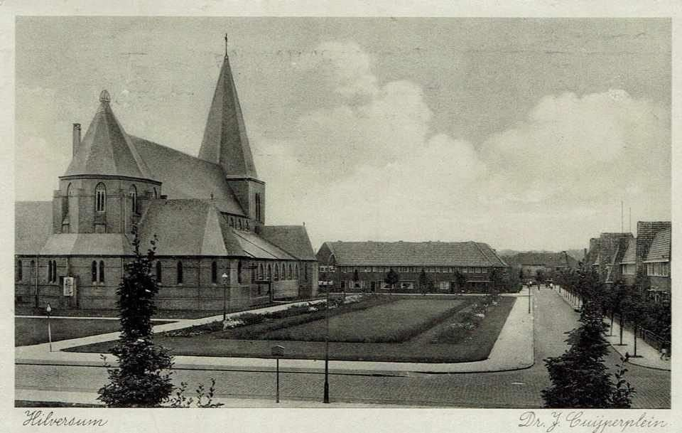
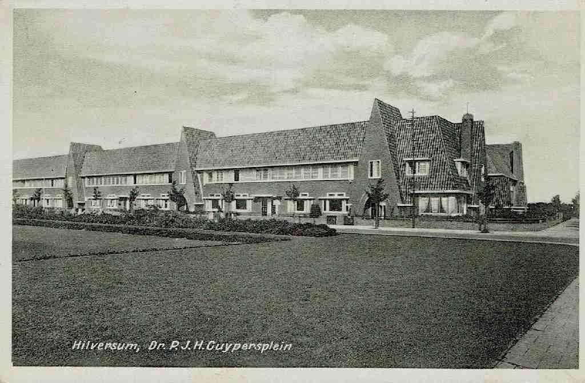
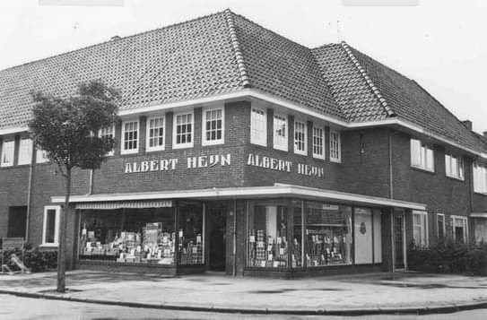
Bij dit ensemble hoorde nog een vierde gebouw. Aan de rand van het plein, op nummer 1, opende op 3 september 1928 de St. Willibrordusschool, naar ontwerp van architect Nieuwenhuys: een katholieke jongensschool van acht lokalen, opgericht onder dezelfde nieuwe H. Hartparochie als de kerk. Kerk, woningen en school kwamen zo in nagenoeg hetzelfde jaar tot stand. De school is er niet meer; in 1994 maakte zij plaats voor een kleinschalig appartementencomplex. Toch is het verleden niet helemaal uitgewist: de ronding bij de entree van het complex verwijst nog naar het oude schoolgebouw dat hier bijna zeventig jaar stond.
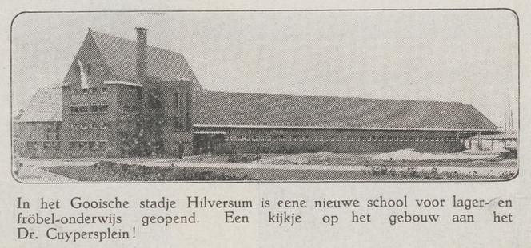
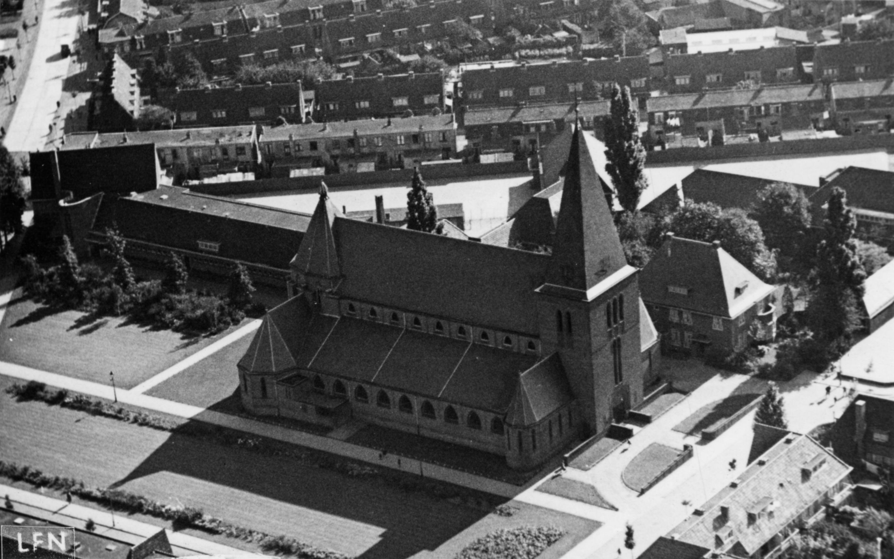
En de naam? Het plein heet naar Pierre Cuypers (1827–1921), de architect van het Rijksmuseum en het Centraal Station, en van Hilversums eigen baken, de Sint-Vituskerk uit 1892 met haar toren van 98 meter. Daar zit een lus in: Cuypers inspireerde de generatie van de Amsterdamse School waarin uw huizen zijn gebouwd. De naamgever van het plein is zo de geestelijke grootvader van de stijl van het plein, ook al staat zijn eigen kerk een eind verderop.
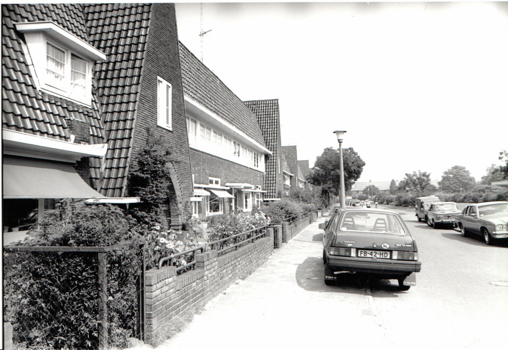
De fabrieken
Hoe bouwland fabriek werd
Tot in de jaren 1870 was dit akkerland langs de zandweg naar Laren. Eén stuk bouwland aan die weg werd het begin van de industrie: in 1880 begon J.G. Taphorn er een ijzer- en metaalgieterij. Negen jaar later nam J. Ensink het bedrijf over, en onder zijn naam zou de gieterij de stad ingaan. Toen de tram pal langs het terrein ging rijden, kreeg de gieterij meteen een eigen zijspoor: zo kwamen cokes en ruwijzer per rail binnen en gingen de zware gietijzeren producten er weer mee weg.
De Hilversumsche IJzergieterij Ensink goot het sierijzer waarmee de villa's van het Gooi werden opgesierd: ronde gevelramen, hekwerken, veranda's, en de gietijzeren lantaarnpalen met het stempel van de gieterij die nog lang in de stad stonden. Ook de ijzeren drinkbakken voor paarden op straat kwamen hiervandaan. In 1896 verzekerde Ensink zijn vijftig arbeiders op eigen kosten tegen invaliditeit en ongelukken, voor die tijd opmerkelijk. De gieterij draaide ruim negentig jaar, tot 1973; daarna verdween de fabriek en kwam er kantoor- en woningbouw.
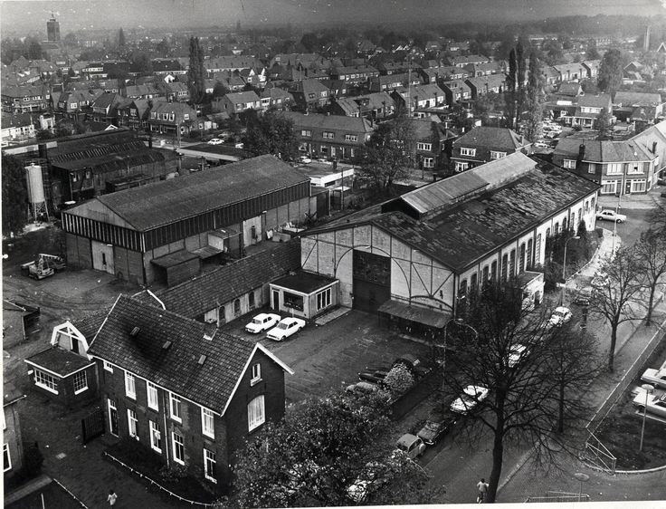
Weetje · de Jumbo
Op de plek van de ijzergieterij staat nu de Jumbo. Het winkelpand dateert uit 1975, twee jaar na de sloop van de fabriek, en werd in 2000 grondig gerenoveerd, waarbij het de huidige kenmerkende glazen gevel kreeg.
Ensink kreeg gezelschap. In 1885 bouwde de gemeente haar gasfabriek aan de Kleine Drift, op een strook stuifzand buiten de bebouwde kom; een particuliere voorganger leverde sinds 1860 al gaslicht. Daaromheen verrezen een margarinefabriek, de verffabriek Ripolin, kachelfabrikant E.M. Jaarsma, een tapijtweverij, de sigarenfabriek Oenen & Mansen (1904), rijtuigenfabriek Bokhorst en chocoladefabriek Splendid (1922). De Hollandsche IJzeren Spoorweg bouwde huizen voor haar personeel, en na 1900 kwamen er winkels, scholen en een badhuis.
De gasfabriek groeide mee met de stad, met steeds grotere gashouders; de laatste, uit 1933, was 40 meter hoog en van verre te zien. Voor de aanvoer van kolen werd een eigen spoorlijntje vanaf het station naar de fabriek doorgetrokken.
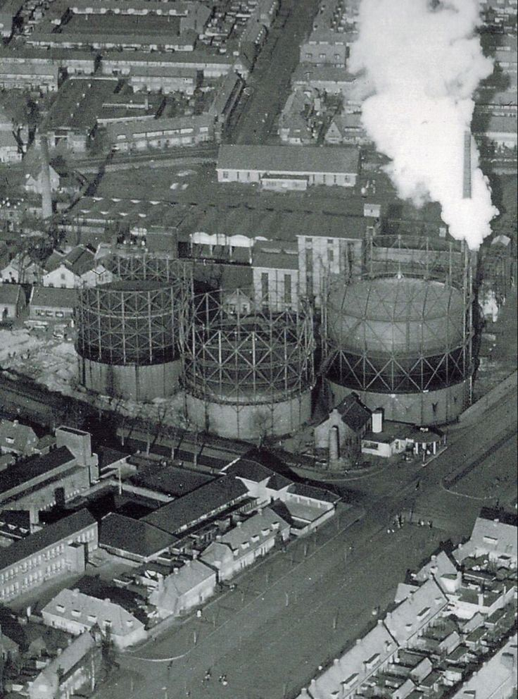
Tussendoor
De straten als wie-is-wie
De hele buurt is vernoemd naar bouwers en geleerden. Eén straat valt op door een lokale held.
- Cuypersarchitect van het Rijksmuseum en de Hilversumse Sint-Vitus
- Hendrick de Keyserbouwmeester en beeldhouwer van de Hollandse renaissance; zijn laan grenst direct aan het plein
- Simon Stevinwiskundige en ingenieur
- Calandingenieur en waterbouwkundige, bekend van het Calandkanaal
- Van Leeuwenhoekmicroscopist en ontdekker van micro-organismen
- Jan van der Heydenuitvinder van de brandslang en pionier van straatverlichting
- Cornelis Drebbeluitvinder van de eerste bestuurbare onderzeeër; ook zijn straat grenst direct aan het plein
- Minckelerspionier van het gaslicht, niet toevallig vlak bij de gasfabriek
- Joh. Geradtsde uitzondering: oprichter van De Gooi- en Eemlander, lokaal raadslid
De tram
De Gooische Moordenaar
Waar de trein de grote lijn naar Amsterdam trok, vulde de tram de gaten op. De Gooische Stoomtram, opgericht in 1880, reed vanaf 1881 vanaf het Weesperpoortstation in Amsterdam dwars door het Gooi en knoopte de dorpen aaneen die géén station hadden: Muiden, Naarden, Huizen, Blaricum en Laren. Zo werden ook de afgelegen heidedorpen ineens bereikbaar, en het Gooi groeide hard, van zo'n 19.000 inwoners in 1881 tot honderdduizend rond 1930.
In 1882 kreeg ook Hilversum zijn aftakking. De eerste dienst reed op 15 april van dat jaar, en alleen al met de Paasdagen werden er tienduizend reizigers vervoerd. Dagelijks reden er dertien trams heen en terug naar Amsterdam.
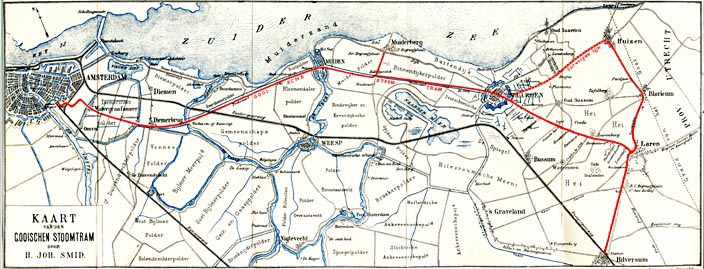
Ook door deze buurt reed hij. In de volksmond heette de tram de Gooische Moordenaar, een bijnaam die hij dankte aan de vele dodelijke ongelukken: in totaal 117. Een van die ongelukken haalde al in 1882 de landelijke pers: bij de ijzergieterij werd ene metselaar Stokvis door de tram overreden en op slag gedood.
De tram reed vanuit Laren over de Larenseweg de stad in. Ook hem hield het gemeentebestuur buiten het centrum, dus de tram eindigde aan de oostkant van het spoor.
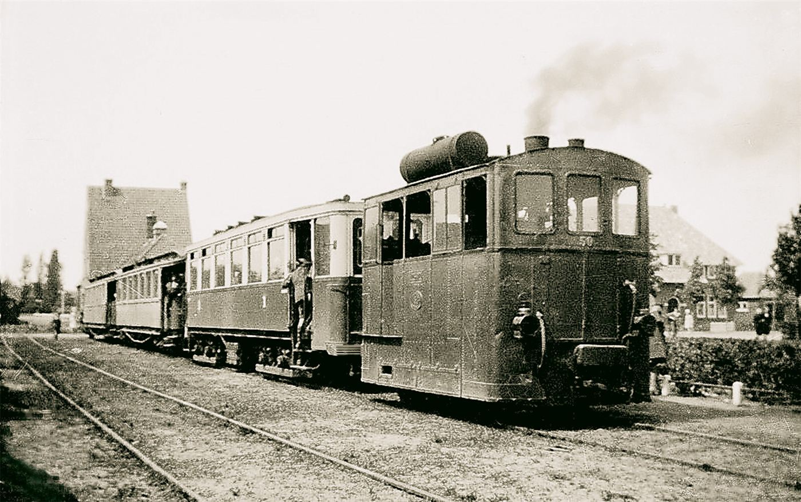
Komend uit Laren stopte hij bij een halte aan de Jan van der Heijdenstraat en reed daarna achter de huizen langs naar zijn eindpunt bij de Noorderweg. Het oude stationsgebouw staat er nog, jarenlang in gebruik als busstation. De laatste tram reed in 1947.
Weetje · de wachtkamer
Tot de Gooische Stoomtram in 1902 een eigen stationsgebouw kreeg, deed een café dienst als wachtkamer. Voordat een tram naar Laren vertrok, werden de cafégasten gewaarschuwd. Dat pand werd later Hotel Santbergen, waarin tegenwoordig bakker Matthijs Boon gevestigd is.
Wonen
Huizen voor de buurt
Wie in die fabrieken werkte, moest ook ergens wonen. De woningbouwverenigingen pakten dat op. Aan de Johannes Geradtsweg bouwde de vereniging van Erfgooiers vanaf 1917 haar eerste complex. De weg is vernoemd naar Johannes Geradts, oprichter van het dagblad De Gooi- en Eemlander, en wordt tot vandaag vaak foutief "Johan" genoemd. De buurt Over 't Spoor werd bovendien een proeftuin van de wereldberoemde gemeentearchitect Willem Dudok, die voor Hilversum in totaal vijfentwintig woningbouwcomplexen ontwierp (1919–1956) en hier verschillende van zijn vroege uitbreidingen bouwde. De woningen aan de Jan van der Heijdenstraat horen bij zijn tiende complex (1927–1928): achtenveertig eengezinswoningen die zich ook uitstrekten over de Merel-, Minckelers- en Spreeuwenstraat.
Weetje · de krant van de buurt
De Gooi- en Eemlander, in 1871 door Geradts opgericht, kwam in 1901 in handen van de Hilversumse drukkersfamilie Klene. Toen Geradts' drukkerij aan de Kerkstraat in 1900 afbrandde, riep hij de hulp in van de gebroeders Klene, die al een drukkerij aan de Hoge Laarderweg hadden. Kort daarna namen zij de krant over, die nog vier generaties lang in de familie Klene zou blijven, tot 1996.
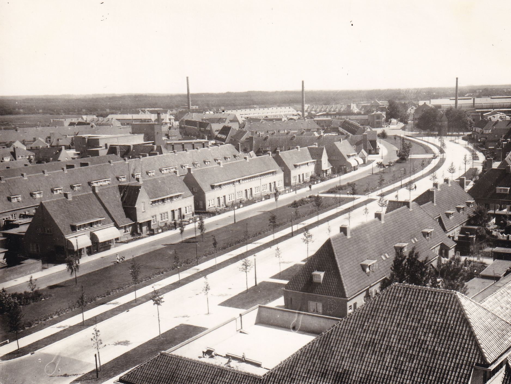
Bij een grootschalige renovatie aan het begin van deze eeuw is een groot deel ervan gesloopt en vervangen door nieuwbouw in Dudok-stijl, uitgevoerd door woningcorporatie Dudok Wonen. Stukje bij beetje liep het lege zand vol met straten, tuinen en mensen.
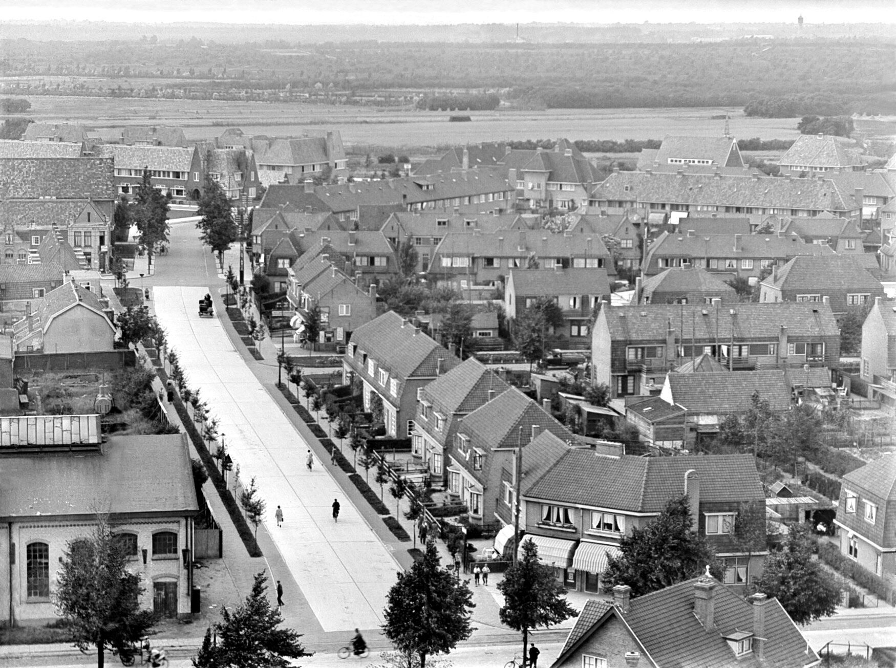
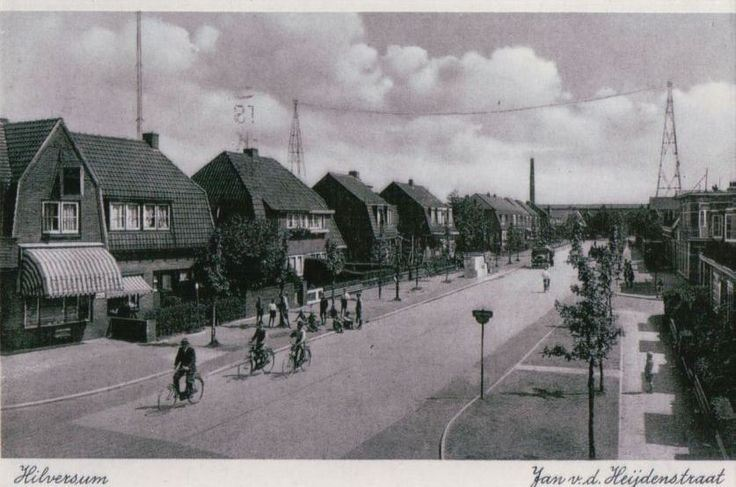
Eén Dudok-gebouwtje in de buurt is ouder dan al zijn woningen hier, en kwam er toch het laatst. Aan het Den Uylplein, dat tot ver in de twintigste eeuw Erfgooiersplein heette, staat een kleurig houten huisje dat hij al in 1916 ontwierp, waarschijnlijk zijn eerste werk in Hilversum. Het stond eerst bij het oude raadhuis op de Kerkbrink en werd in 1933 in zijn geheel hierheen verplaatst. Oorspronkelijk was het een politiepost. De aanleiding was veelzeggend: de buurt over 't spoor gold rond 1915 als probleemwijk, en bewoners vroegen de burgemeester per brief om politietoezicht. Sinds 1947 zit er een kapper in.
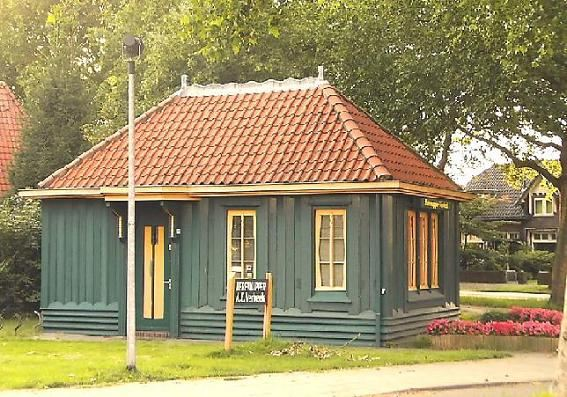
Weetje · Rustplaats in stijl
In Hilversum Noord richting station Mediapark ligt de Noorderbegraafplaats, die Dudok tussen 1927 en 1930 als een streng geometrisch geheel ontwierp, en die ook zijn eigen laatste rustplaats werd. Samen met zijn vrouw Aletta ligt hij er in een door hemzelf ontworpen dubbelgraf van Carrara-marmer, met hun namen in goud en een klein hartje.
Het signaal
Waar Hilversum begon te zenden
Het grootste verhaal van de buurt staat op de Jan van der Heijdenstraat. Daar opende in 1921 de Nederlandsche Seintoestellen Fabriek, de NSF, opgericht door reders die in de Eerste Wereldoorlog geen seintoestellen voor hun schepen meer uit het buitenland konden krijgen. En hier gebeurde iets dat het hele land zou veranderen: op 21 juli 1923 verzorgde de NSF de eerste Hilversumse radio-uitzending, gepresenteerd door Willem Vogt. Het was het begin van het Nederlandse omroepbestel.
Op 20 januari 1924 klonk het eerste gesproken woord, een toespraak van schrijfster Carry van Bruggen. Omroepen als NCRV, VARA, KRO en VPRO huurden zendtijd bij de fabriek, en dáárom kwamen ze allemaal naar Hilversum. De mediastad is hier, een paar straten van uw plein, geboren. De NSF groeide uit tot de grootste werkgever van het dorp, van honderd man in 1921 naar duizenden, met een schoorsteen met de letters NSF die van verre te zien was.
De bezetting liet ook op de NSF diepe sporen na: in 1941 begon hier de Hilversumse Februaristaking, en verzetslieden bouwden er stiekem zenders voor agenten uit Engeland. Wat er in die jaren in de buurt zelf gebeurde, leest u hierna.
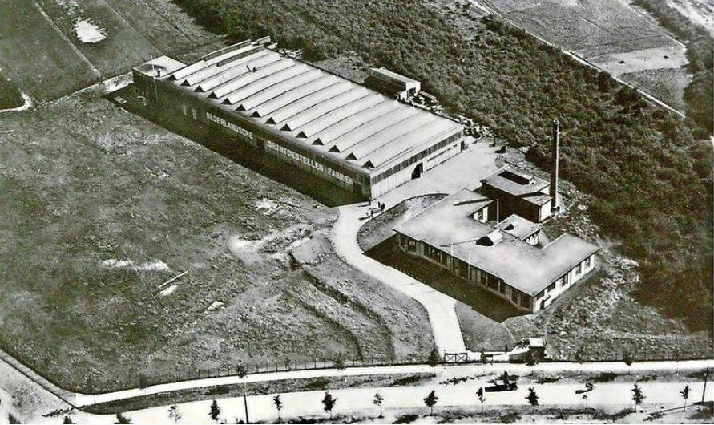
De bezetting
Vijf jaar onder de Duitsers
De buurt over 't spoor beleefde de bezetting van dichtbij. De Nederlandsche Seintoestellen Fabriek aan de Jan van der Heijdenstraat was de grootste werkgever van het dorp en werd door de Duitsers gevorderd, bewaakt door een Werkschutz van ruim honderdvijftig gewapende mannen. De scholen rond het Cuypersplein en omgeving werden door de Wehrmacht ingekwartierd; leerlingen werden elders ondergebracht. Soldaten die in die scholen sliepen, marcheerden 's morgens dwars door de straat naar de heide achter de Noorderkerk om te oefenen. Die heide was Sperrgebiet: burgers mochten er niet komen.
Weetje · de Noorderkerk bestaat niet meer
De Noorderkerk aan de Johannes Geradtsweg 72 werd in 1986 buiten gebruik gesteld na een krimpende gemeente, en rond 1992 gesloopt. Op de plek staat nu een appartementencomplex.
Op 25 februari 1941 stopten de machines bij de NSF. Duizenden werknemers legden die ochtend het werk neer, als reactie op de jodenvervolging in Amsterdam: het begin van de Hilversumse Februaristaking. De staking sloeg die dag nog over naar bedrijven aan de Laarderweg en omgeving, en de volgende dag demonstreerden duizenden op de Groest. Samen met Amsterdam en Zaandam werd Hilversum een zoengeld van 2,5 miljoen gulden opgelegd. Op een gedenksteen op de Oude Begraafplaats staan acht NSF-medewerkers die in het verzet omkwamen.
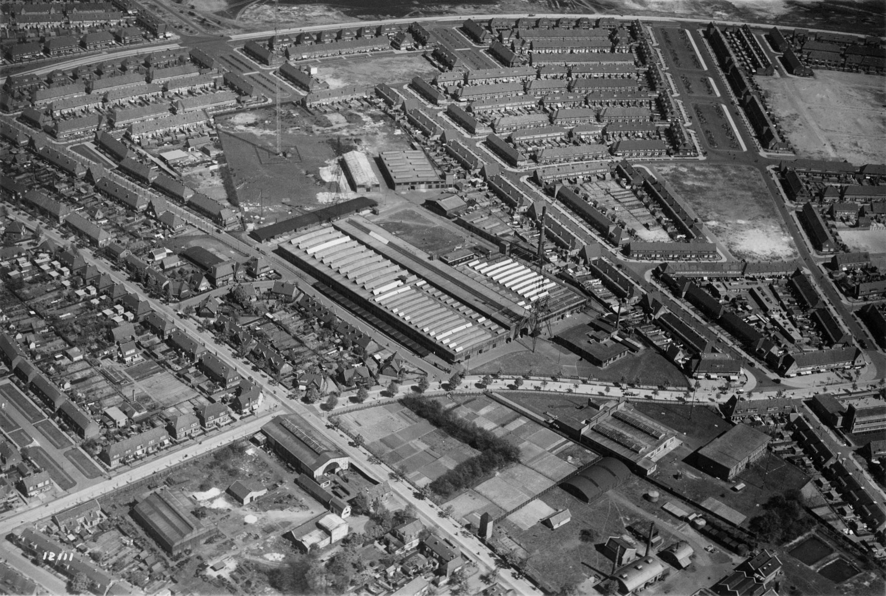
De NSF had drie zendmasten. De twee zestig meter hoge masten uit 1924, een gift van Anton Philips, stonden bij buurtbewoners bekend als de Zingende Torens vanwege het geluid dat de wind erdoorheen maakte. In 1932 kwam er een derde bij: een stalen constructie van honderdveertig meter. In de nacht van 13 op 14 mei 1940, rond vijf uur 's ochtends, lieten Nederlandse troepen alle drie opblazen om te voorkomen dat de Duitsers ze zouden gebruiken. De grote mast bleef aanvankelijk scheef hangen; pas bij een tweede poging overdag viel hij neer, op woningen in de naastgelegen Meteorenstraat.
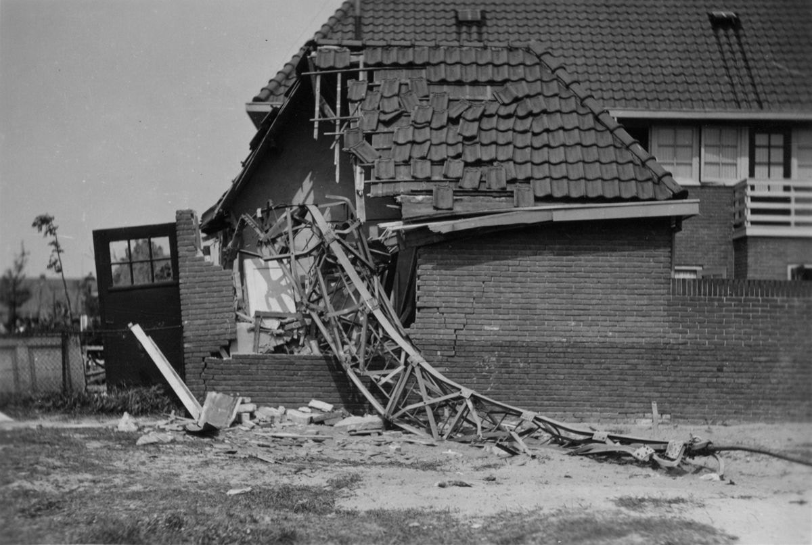
In de kerktoren van de Noorderkerk verstopten verzetslieden een buitgemaakte Duitse marinezender, verkregen met hulp van NSF-personeel. De kosterswoning ernaast gold als een "winkeltje": een doorgeefluis voor koeriers, voedsel voor ondergedoken kinderen en een schuilplaats voor neergeschoten geallieerde piloten.
In de Hendrick de Keyserlaan zelf woonden ook onderduikers. Bij een bewoner op nummer 14 verbleef vier maanden lang een onbekende man op zolder, gevaarlijk want schuin tegenover hem woonden NSB'ers en om de hoek Duitsers. Pas bij de bevrijding werd bekend dat bij een buurman op nummer 3 een Joods meisje met vervalste papieren had ondergedoken.
Weetje · een levende bron
De buurtbeschrijvingen hierboven steunen mede op een vijfdelige serie die Jelte Rep in 2025 publiceerde over zijn straat tijdens de bezetting. Rep werd in 1940 geboren in de Zaanstreek en woont al meer dan vijftig jaar in de Hendrick de Keyserlaan.
Epiloog
Bevrijding en verlies
Op 23 oktober 1944 werd Hilversum getroffen door een van de grootste razzia's van bezet Nederland. 's Morgens vroeg werd de stad afgegrendeld; 3.761 mannen en jongens werden in de avond lopend naar Kamp Amersfoort afgevoerd, een deel daarna naar Duitsland. In de Hendrick de Keyserlaan werden onder anderen een directe buurman van Jelte en de musicus Ries de Hilster opgepakt; De Hilster wist onderweg te ontsnappen. Van de afgevoerde groepen keerden ten minste 71 Hilversumse mannen niet terug.
De hongerwinter die volgde was ook in de straat voelbaar: de winkels konden "alleen maar 'nee' verkopen." Op 29 december 1944 vlogen zes Britse Typhoons over de buurt richting de commandobunker op het Trompenberg; de raketten kwamen deels rond de watertoren terecht en zeven burgers kwamen om. Begin mei 1945 wierpen geallieerde vliegtuigen voedsel af boven de heide achter de Noorderkerk, diezelfde heide die vier jaar lang Sperrgebiet was geweest.
Op 7 mei 1945 reed een voorhoede van de Britse 49e Infanteriedivisie, de "Polar Bears", via de Utrechtseweg Hilversum binnen. Duizenden Hilversummers stonden langs de weg te wachten.
Weetje · de Polar Bears die bleven
Op 10 mei 1945, drie dagen na de bevrijding, ontplofte bij Paleis Soestdijk een zware mijn tijdens het inzamelen van Duits wapentuig. Dertien Britse Polar Bears kwamen om. In de weken daarna stierven er nog drie. Zestien Britse soldaten liggen begraven op de Noorderbegraafplaats aan de Laan 1940-1945 in Hilversum, tot op de dag van vandaag herdacht.
Van rook naar groen
De fabrieken worden weer woningen
Het einde van de industrie werd het begin van het wonen van nu. De NSF-terreinen zijn Seinhorst geworden, de gasfabriek Villa Industria. Drie andere fabrieken op loopafstand van het plein volgden.
Maar zo ver was het in 1945 nog niet. Eerst moest de buurt de draad van het gewone leven weer oppakken. De fabrieken die de oostkant haar rook en haar naam hadden gegeven, draaiden in de jaren na de oorlog gewoon door, en er kwam zelfs een nieuwe bij.
Bij de opening van De Melkfabriek in 1957 was de ereplaats niet voor burgemeester Boot, maar voor Geertruida Griet, een prijskoe uit Laren, binnengeleid over een tapijt terwijl de politiekapel speelde. De fabriek verwerkte veertig miljoen liter melk per jaar voor een kwart miljoen Gooienaren. Dat duurde bijna vijftig jaar. Onder de karakteristieke schaaldaken wonen, werken en leren nu mensen. De schoorsteen staat er nog: bij de renovatie werden de bouwplannen erin gemetseld, achter een dichtgemetseld stalen luik.
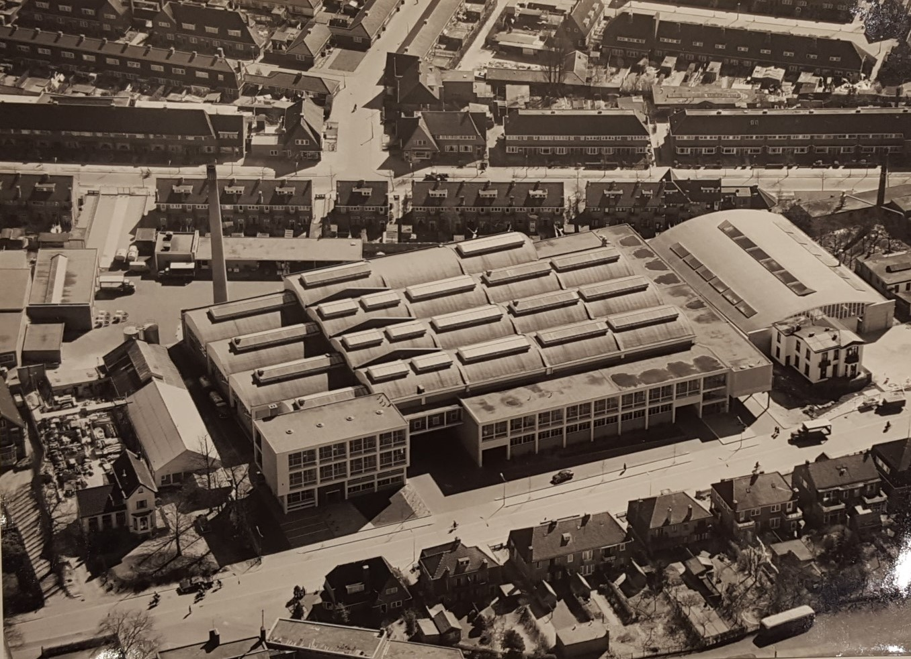
De Ripolinfabriek opende aan het begin van de twintigste eeuw aan de Larenseweg. Bijna zeventig jaar later was zij de grootste zelfstandige verffabriek van Europa. Na de sluiting nam Philips het terrein over, gevolgd door AT&T en, aan het einde van de jaren negentig, het Europese hoofdkantoor van Lucent Technologies. Na de dotcomcrisis van 2001 bleef het terrein lang leeg. Enkele panden zijn gerenoveerd tot appartementen en kantoren; andere zijn gesloopt en vervangen door stadswoningen.
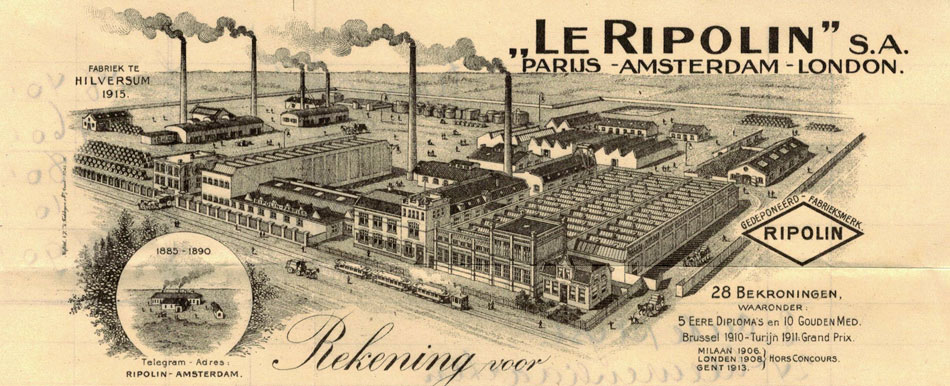
De sigarenfabriek die Van Oenen en Manssen in 1883 op de hoek van de Larenseweg en de Ampèrestraat bouwden, groeide uit tot de grootste van de twee Hilversumse sigarenfabrieken. In 1949 verplaatste het bedrijf de productie naar Bergeyk: in Hilversum was het personeel niet meer te vinden, in de regio Eindhoven wel. Datzelfde jaar nam het Technisch Centrum van de Nederlandse Radio Unie het pand over en bouwden technici er een zogenaamde dode kamer, vrijwel zonder nagalm, om microfoons te testen. In april 2020 verwoestte brand een deel van het dak; het pand wordt nu omgebouwd tot zorgwoningen voor ouderen.

En nu?
En uw plein zelf? Dat gaat sinds 2026 zijn volgende fase in, met de herinrichting tot groenere speel- en verblijfsplek. De rafelrand van honderd jaar geleden is een buurtplein geworden om te blijven.
Kent u dit stukje Hilversum? Heeft u hier gewoond, of bewaart uw familie foto's, namen of verhalen uit de buurt over 't spoor? Aanvullingen en correcties zijn welkom. Mail ze naar overhetspoor@outlook.com.